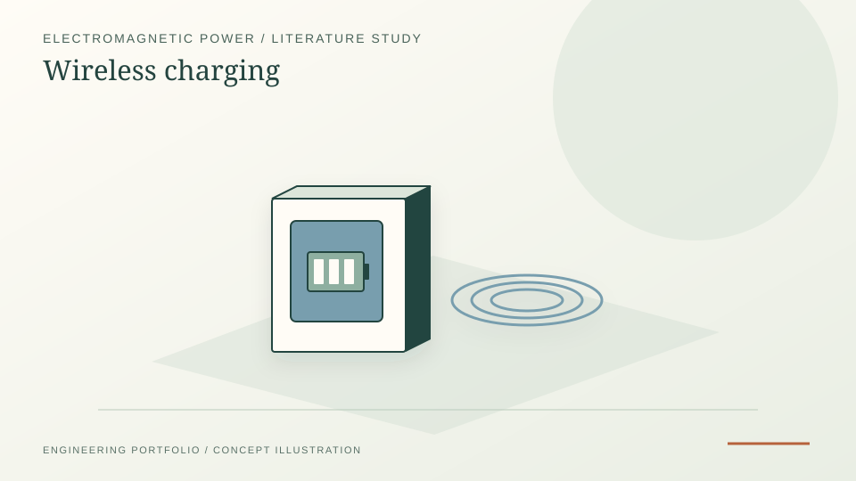

Automotive technology study covering wireless charging concepts, deployment routes and technical constraints.
Automotive systems · Electrification · Technology study
Wireless Charging Technology
An early technology-review project on wireless charging for portable and automotive environments, reframed as supporting evidence for electrification awareness rather than as a hardware build.
Technology reviewAutomotive systemsPower-transfer concepts

PROJECT REFERENCE / WIRELESS-CHARGING-TECHNOLOGYUseful as early background for electrified transport and charging-infrastructure thinking.
Technical question
How can wireless power transfer be applied to vehicle charging, and what technical constraints prevent it from being treated as a simple replacement for conductive charging?
Method
- Reviewed inductive and resonant charging principles for portable and automotive use cases.
- Compared convenience benefits against alignment, coupling, efficiency and infrastructure constraints.
- Placed the technology in the broader context of transport electrification rather than treating charging as an isolated component.
Key technical findings
- Air-gap penalty: coupling coefficient k drops rapidly with gap; at 150–200 mm ground clearance, k is typically 0.2–0.3 vs. 0.95+ for tightly-coupled chargers — directly raising the source/load ratio needed for the same output.
- Resonant compensation: series-series and LCC compensation networks recover much of the efficiency loss; well-tuned systems reach ~85–90 % DC-to-DC efficiency vs. ~95 %+ for conductive at the same power.
- Alignment sensitivity: ±5 cm misalignment can drop power by 30–50 % without active alignment aids — practical deployment needs floor-marker assist or active steering correction.
- EMC and regulation: SAE J2954 and ISO 19363 frame the standards space; thermal management of the pad windings is the often-overlooked design driver.
What I took away
Wireless charging is not a drop-in replacement for cables — it is an option for specific use cases (fleet depots, robotic AGVs, frequent short charges) where the convenience justifies the ~5–10 percentage-point efficiency penalty. Recognising where each technology fits is the engineering judgement the review helped develop.
Relevance
The project is intentionally kept as a short evidence page. It contributes to the Energy Systems and Industrial R&D story by showing early engagement with electrification pathways, charging infrastructure and the physical constraints behind clean-transport technologies.